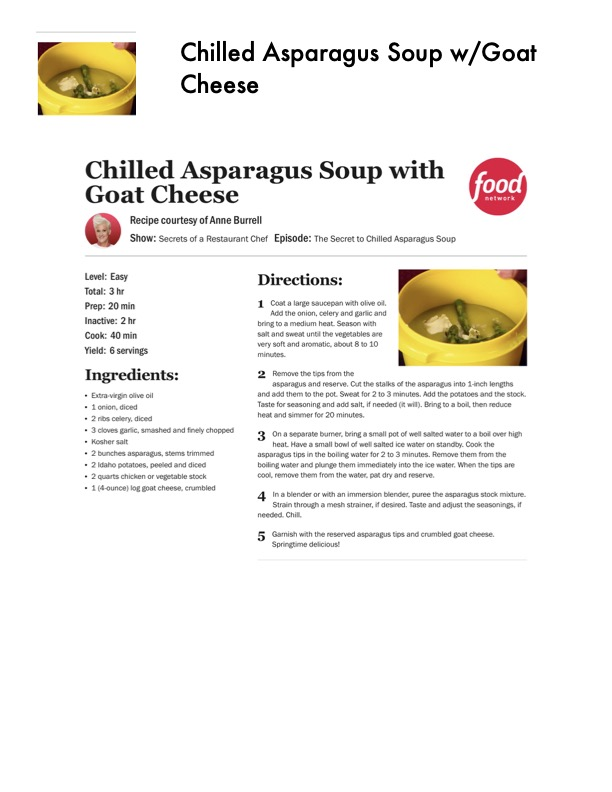

Chilled Asparagus Soup with Goat Cheese

Original cookbook page 171
Recipe courtesy of Anne Burrell from Secrets of a Restaurant Chef - The Secret to Chilled Asparagus Soup
Prep: 20 min • Cook: 40 min • Total: 3 hr
Ingredients
- Extra-virgin olive oil
- 1 onion, diced
- 2 ribs celery, diced
- 3 cloves garlic, smashed and finely chopped
- Kosher salt
- 2 bunches asparagus, stems trimmed
- 2 Idaho potatoes, peeled and diced
- 2 quarts chicken or vegetable stock
- 1 (4-ounce) log goat cheese, crumbled
Instructions
- Coat a large saucepan with olive oil. Add the onion, celery and garlic and bring to a medium heat. Season with salt and sweat until the vegetables are very soft and aromatic, about 8 to 10 minutes.
- Remove the tips from the asparagus and reserve. Cut the stalks of the asparagus into 1-inch lengths and add them to the pot. Sweat for 2 to 3 minutes. Add the potatoes and the stock. Taste for seasoning and add salt, if needed (it will). Bring to a boil, then reduce heat and simmer for 20 minutes.
- On a separate burner, bring a small pot of well salted water to a boil over high heat. Have a small bowl of well salted ice water on standby. Cook the asparagus tips in the boiling water for 2 to 3 minutes. Remove them from the boiling water and plunge them immediately into the ice water. When the tips are cool, remove them from the water, pat dry and reserve.
- In a blender or with an immersion blender, puree the asparagus stock mixture. Strain through a mesh strainer, if desired. Taste and adjust the seasonings, if needed. Chill.
- Garnish with the reserved asparagus tips and crumbled goat cheese. Springtime delicious!
Recipe #171 from collection